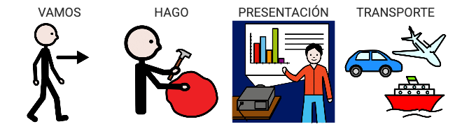

Producto final
La situación de aprendizaje que propongo está enmarcada en la temática de los medios de transporte y va dirigida a un grupo de cinco alumnos y alumnas con necesidades educativas especiales, de diferentes edades, de un aula específica de Formación Básica Obligatoria de un Centro de Educación Infantil y Primaria. Estos alumnos y alumnas tienen un nivel de competencia que se encuentra situado en torno a un 1º de Educación Primaria.
El producto final de esta situación de aprendizaje es una presentación en Genially/Canva a modo de guía visual sobre los medios de transporte. Cada alumno/a elegirá un medio de transporte y creará una presentación para explicarlo. Al final, a nivel de grupo, uniremos todas las presentaciones creando una única presentación común de todos los transportes que han seleccionado.
Para darle difusión a nuestro proyecto, durante dos días invitaremos, por un lado, a las familias y, por otro lado, a otras clases del centro a conocerlo. Les presentaremos nuestra creación en Genially/Canva y se la explicaremos.
He determinado utilizar Genially/Canva para nuestro producto final por varios motivos:
- Por una parte, permite utilizar una plantilla base de presentación. En el caso de mi grupo en concreto, les aportaría una plantilla de presentación como guía para que ellos/as pudiesen ir modificando a su gusto.
- Por otro lado, permite presentar la información en diferentes formatos (audio, imagen, etc.). Un aspecto tan importante en relación con la accesibilidad universal. Así mismo, considero que responde a la necesidad de dar una respuesta educativa a nuestro alumnado multinivelada, es decir, puede ser usada por alumnos/as con mayor y con menor competencia digital. El niño/a que tenga mejor manejo de herramientas digitales, podrá hacer creaciones con más detalles y recursos, pero el que tenga menor manejo, igualmente podrá realizar la actividad.
- Por último, es una herramienta relativamente intuitiva y muy llamativa para el alumnado (elementos diferentes, aspectos interactivos, etc.).
Contenido DUA
El producto final de esta situación de aprendizaje es una presentación en Genially/Canva a modo de guía visual sobre los medios de transporte. Cada alumno/a elegirá un medio de transporte y creará una presentación para explicarlo. Al final, a nivel de grupo, uniremos todas las presentaciones creando una única presentación común de todos los transportes que han seleccionado. Expondremos nuestras presentaciones a otras clases y a las familias.
Lectura facilitada
El producto final es:
- una presentación en Genially/Canva de los medios de transporte.
- haremos una guía común todos/as.
- exposición a otras clases y a familias.
Audio
Apoyo visual
